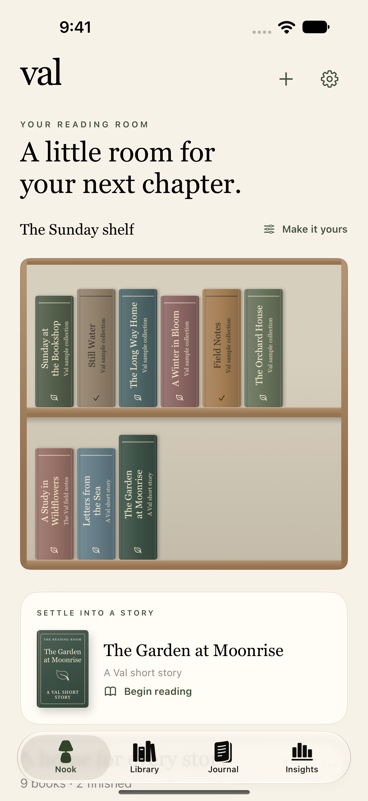
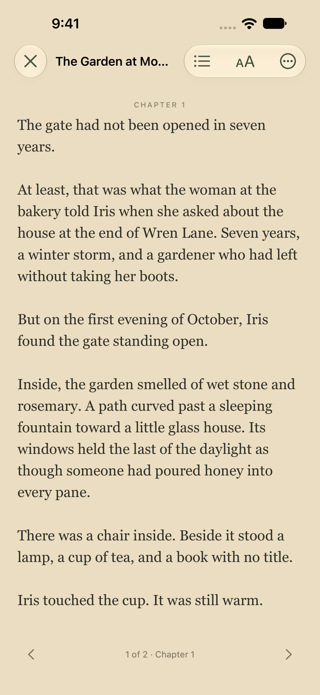

A little space
for every story.
Bring your books, audiobooks, and the words you want to keep into one personal reading room.
Build a shelf that feels like you. Turn a page, press play, or leave a note for later.
Explore ValPreparing for a free iPhone release in Canada, subject to App Store review.

Your books, at home.
Import DRM-free books and audio from Files. Arrange your library by shelf, series, or your own reading order.
Keep the good bits.
Highlight a passage, add a sticky, and collect your thoughts in a reading journal. Record finished books and rereads.
Make room for listening.
Play local audiobooks with chapters, a sleep timer, and background audio. Pair text and audio editions on one shelf.

Read at your own pace.
Choose your type, paper, and page style. Save your place, listen with a system voice, or revisit a favorite passage.
Original short stories are included, so you can try the reader as soon as you open Val.
A personal library.
Local reading needs no Val account. Optional connections include your own Audiobookshelf server, private iCloud reading-state sync, and Google Drive imports.
Google Drive uses read-only access to find and import books you choose, including books in watched folders. It never changes or deletes your Drive files. Google sign-in is unverified, shows a consent warning, and has a lifetime limit of 100 authorizing users across the app. Some Google accounts cannot connect. Local reading and imports from Files do not require Google sign-in.
Read how Val handles your data